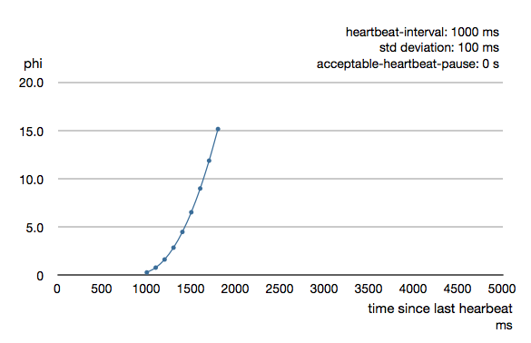

Cluster Usage
For introduction to the Akka Cluster concepts please see Cluster Specification.
Preparing Your Project for Clustering
The Akka cluster is a separate jar file. Make sure that you have the following dependency in your project:
<dependency>
<groupId>com.typesafe.akka</groupId>
<artifactId>akka-cluster_2.10</artifactId>
<version>2.2.3</version>
</dependency>
A Simple Cluster Example
The following small program together with its configuration starts an ActorSystem with the Cluster enabled. It joins the cluster and logs some membership events.
Try it out:
- Add the following application.conf in your project, place it in src/main/resources:
akka {
actor {
provider = "akka.cluster.ClusterActorRefProvider"
}
remote {
log-remote-lifecycle-events = off
netty.tcp {
hostname = "127.0.0.1"
port = 0
}
}
cluster {
seed-nodes = [
"akka.tcp://ClusterSystem@127.0.0.1:2551",
"akka.tcp://ClusterSystem@127.0.0.1:2552"]
auto-down = on
}
}
To enable cluster capabilities in your Akka project you should, at a minimum, add the Remoting settings, but with akka.cluster.ClusterActorRefProvider. The akka.cluster.seed-nodes should normally also be added to your application.conf file.
The seed nodes are configured contact points for initial, automatic, join of the cluster.
Note that if you are going to start the nodes on different machines you need to specify the ip-addresses or host names of the machines in application.conf instead of 127.0.0.1
- Add the following main program to your project, place it in src/main/java:
package sample.cluster.simple.japi;
import akka.actor.ActorRef;
import akka.actor.ActorSystem;
import akka.actor.Props;
import akka.cluster.Cluster;
import akka.cluster.ClusterEvent.ClusterDomainEvent;
public class SimpleClusterApp {
public static void main(String[] args) {
// Override the configuration of the port
// when specified as program argument
if (args.length > 0)
System.setProperty("akka.remote.netty.tcp.port", args[0]);
// Create an Akka system
ActorSystem system = ActorSystem.create("ClusterSystem");
// Create an actor that handles cluster domain events
ActorRef clusterListener = system.actorOf(Props.create(
SimpleClusterListener.class), "clusterListener");
// Add subscription of cluster events
Cluster.get(system).subscribe(clusterListener,
ClusterDomainEvent.class);
}
}
Start the first seed node. Open a terminal window and run (one line):
mvn exec:java -Dexec.mainClass="sample.cluster.simple.japi.SimpleClusterApp" \ -Dexec.args="2551"
2551 corresponds to the port of the first seed-nodes element in the configuration. In the log output you see that the cluster node has been started and changed status to 'Up'.
Start the second seed node. Open another terminal window and run:
mvn exec:java -Dexec.mainClass="sample.cluster.simple.japi.SimpleClusterApp" \ -Dexec.args="2552"
2552 corresponds to the port of the second seed-nodes element in the configuration. In the log output you see that the cluster node has been started and joins the other seed node and becomes a member of the cluster. Its status changed to 'Up'.
Switch over to the first terminal window and see in the log output that the member joined.
Start another node. Open a maven session in yet another terminal window and run:
mvn exec:java -Dexec.mainClass="sample.cluster.simple.japi.SimpleClusterApp"
Now you don't need to specify the port number, and it will use a random available port. It joins one of the configured seed nodes. Look at the log output in the different terminal windows.
Start even more nodes in the same way, if you like.
6. Shut down one of the nodes by pressing 'ctrl-c' in one of the terminal windows. The other nodes will detect the failure after a while, which you can see in the log output in the other terminals.
Look at the source code of the program again. What it does is to create an actor and register it as subscriber of certain cluster events. It gets notified with an snapshot event, CurrentClusterState that holds full state information of the cluster. After that it receives events for changes that happen in the cluster.
Joining to Seed Nodes
You may decide if joining to the cluster should be done manually or automatically to configured initial contact points, so-called seed nodes. When a new node is started it sends a message to all seed nodes and then sends join command to the one that answers first. If no one of the seed nodes replied (might not be started yet) it retries this procedure until successful or shutdown.
You define the seed nodes in the Configuration file (application.conf):
akka.cluster.seed-nodes = [
"akka.tcp://ClusterSystem@host1:2552",
"akka.tcp://ClusterSystem@host2:2552"]
This can also be defined as Java system properties when starting the JVM using the following syntax:
-Dakka.cluster.seed-nodes.0=akka.tcp://ClusterSystem@host1:2552
-Dakka.cluster.seed-nodes.1=akka.tcp://ClusterSystem@host2:2552
The seed nodes can be started in any order and it is not necessary to have all seed nodes running, but the node configured as the first element in the seed-nodes configuration list must be started when initially starting a cluster, otherwise the other seed-nodes will not become initialized and no other node can join the cluster. It is quickest to start all configured seed nodes at the same time (order doesn't matter), otherwise it can take up to the configured seed-node-timeout until the nodes can join.
Once more than two seed nodes have been started it is no problem to shut down the first seed node. If the first seed node is restarted it will first try join the other seed nodes in the existing cluster.
If you don't configure the seed nodes you need to join manually, using JMX or Command Line Management. You can join to any node in the cluster. It doesn't have to be configured as a seed node.
Joining can also be performed programatically with Cluster.get(system).join(address).
Unsuccessful join attempts are automatically retried after the time period defined in configuration property retry-unsuccessful-join-after. When using seed-nodes this means that a new seed node is picked. When joining manually or programatically this means that the last join request is retried. Retries can be disabled by setting the property to off.
An actor system can only join a cluster once. Additional attempts will be ignored. When it has successfully joined it must be restarted to be able to join another cluster or to join the same cluster again. It can use the same host name and port after the restart, but it must have been removed from the cluster before the join request is accepted.
Automatic vs. Manual Downing
When a member is considered by the failure detector to be unreachable the leader is not allowed to perform its duties, such as changing status of new joining members to 'Up'. The status of the unreachable member must be changed to 'Down'. This can be performed automatically or manually. By default it must be done manually, using using JMX or Command Line Management.
It can also be performed programatically with Cluster.get(system).down(address).
You can enable automatic downing with configuration:
akka.cluster.auto-down = on
Be aware of that using auto-down implies that two separate clusters will automatically be formed in case of network partition. That might be desired by some applications but not by others.
Leaving
There are two ways to remove a member from the cluster.
You can just stop the actor system (or the JVM process). It will be detected as unreachable and removed after the automatic or manual downing as described above.
A more graceful exit can be performed if you tell the cluster that a node shall leave. This can be performed using JMX or Command Line Management. It can also be performed programatically with Cluster.get(system).leave(address).
Note that this command can be issued to any member in the cluster, not necessarily the one that is leaving. The cluster extension, but not the actor system or JVM, of the leaving member will be shutdown after the leader has changed status of the member to Exiting. Thereafter the member will be removed from the cluster. Normally this is handled automatically, but in case of network failures during this process it might still be necessary to set the node’s status to Down in order to complete the removal.
Subscribe to Cluster Events
You can subscribe to change notifications of the cluster membership by using Cluster.get(system).subscribe(subscriber, to). A snapshot of the full state, akka.cluster.ClusterEvent.CurrentClusterState, is sent to the subscriber as the first event, followed by events for incremental updates.
Note that you may receive an empty CurrentClusterState, containing no members, if you start the subscription before the initial join procedure has completed. This is expected behavior. When the node has been accepted in the cluster you will receive MemberUp for that node, and other nodes.
The events to track the life-cycle of members are:
- ClusterEvent.MemberUp - A new member has joined the cluster and its status has been changed to Up.
- ClusterEvent.MemberExited - A member is leaving the cluster and its status has been changed to Exiting. Note that the node might already have been shutdown when this event is published on another node.
- ClusterEvent.MemberRemoved - Member completely removed from the cluster.
- ClusterEvent.UnreachableMember - A member is considered as unreachable by the failure detector.
There are more types of change events, consult the API documentation of classes that extends akka.cluster.ClusterEvent.ClusterDomainEvent for details about the events.
Worker Dial-in Example
Let's take a look at an example that illustrates how workers, here named backend, can detect and register to new master nodes, here named frontend.
The example application provides a service to transform text. When some text is sent to one of the frontend services, it will be delegated to one of the backend workers, which performs the transformation job, and sends the result back to the original client. New backend nodes, as well as new frontend nodes, can be added or removed to the cluster dynamically.
In this example the following imports are used:
import akka.actor.UntypedActor;
import akka.cluster.Cluster;
import akka.cluster.ClusterEvent.CurrentClusterState;
import akka.cluster.ClusterEvent.MemberUp;
import akka.cluster.Member;
import akka.cluster.MemberStatus;
Messages:
public interface TransformationMessages {
public static class TransformationJob implements Serializable {
private final String text;
public TransformationJob(String text) {
this.text = text;
}
public String getText() {
return text;
}
}
public static class TransformationResult implements Serializable {
private final String text;
public TransformationResult(String text) {
this.text = text;
}
public String getText() {
return text;
}
@Override
public String toString() {
return "TransformationResult(" + text + ")";
}
}
public static class JobFailed implements Serializable {
private final String reason;
private final TransformationJob job;
public JobFailed(String reason, TransformationJob job) {
this.reason = reason;
this.job = job;
}
public String getReason() {
return reason;
}
public TransformationJob getJob() {
return job;
}
@Override
public String toString() {
return "JobFailed(" + reason + ")";
}
}
public static final String BACKEND_REGISTRATION = "BackendRegistration";
}
The backend worker that performs the transformation job:
public class TransformationBackend extends UntypedActor {
Cluster cluster = Cluster.get(getContext().system());
//subscribe to cluster changes, MemberUp
@Override
public void preStart() {
cluster.subscribe(getSelf(), MemberUp.class);
}
//re-subscribe when restart
@Override
public void postStop() {
cluster.unsubscribe(getSelf());
}
@Override
public void onReceive(Object message) {
if (message instanceof TransformationJob) {
TransformationJob job = (TransformationJob) message;
getSender()
.tell(new TransformationResult(job.getText().toUpperCase()),
getSelf());
} else if (message instanceof CurrentClusterState) {
CurrentClusterState state = (CurrentClusterState) message;
for (Member member : state.getMembers()) {
if (member.status().equals(MemberStatus.up())) {
register(member);
}
}
} else if (message instanceof MemberUp) {
MemberUp mUp = (MemberUp) message;
register(mUp.member());
} else {
unhandled(message);
}
}
void register(Member member) {
if (member.hasRole("frontend"))
getContext().actorSelection(member.address() + "/user/frontend").tell(
BACKEND_REGISTRATION, getSelf());
}
}
Note that the TransformationBackend actor subscribes to cluster events to detect new, potential, frontend nodes, and send them a registration message so that they know that they can use the backend worker.
The frontend that receives user jobs and delegates to one of the registered backend workers:
public class TransformationFrontend extends UntypedActor {
List<ActorRef> backends = new ArrayList<ActorRef>();
int jobCounter = 0;
@Override
public void onReceive(Object message) {
if ((message instanceof TransformationJob) && backends.isEmpty()) {
TransformationJob job = (TransformationJob) message;
getSender().tell(
new JobFailed("Service unavailable, try again later", job),
getSender());
} else if (message instanceof TransformationJob) {
TransformationJob job = (TransformationJob) message;
jobCounter++;
backends.get(jobCounter % backends.size())
.forward(job, getContext());
} else if (message.equals(BACKEND_REGISTRATION)) {
getContext().watch(getSender());
backends.add(getSender());
} else if (message instanceof Terminated) {
Terminated terminated = (Terminated) message;
backends.remove(terminated.getActor());
} else {
unhandled(message);
}
}
}
Note that the TransformationFrontend actor watch the registered backend to be able to remove it from its list of availble backend workers. Death watch uses the cluster failure detector for nodes in the cluster, i.e. it detects network failures and JVM crashes, in addition to graceful termination of watched actor.
This example is included in akka-samples/akka-sample-cluster and you can try it by copying the source to your maven project, defined as in A Simple Cluster Example. Run it by starting nodes in different terminal windows. For example, starting 2 frontend nodes and 3 backend nodes:
mvn exec:java \
-Dexec.mainClass="sample.cluster.transformation.japi.TransformationFrontendMain" \
-Dexec.args="2551"
mvn exec:java \
-Dexec.mainClass="sample.cluster.transformation.japi.TransformationBackendMain" \
-Dexec.args="2552"
mvn exec:java \
-Dexec.mainClass="sample.cluster.transformation.japi.TransformationBackendMain"
mvn exec:java \
-Dexec.mainClass="sample.cluster.transformation.japi.TransformationBackendMain"
mvn exec:java \
-Dexec.mainClass="sample.cluster.transformation.japi.TransformationFrontendMain"
Node Roles
Not all nodes of a cluster need to perform the same function: there might be one sub-set which runs the web front-end, one which runs the data access layer and one for the number-crunching. Deployment of actors—for example by cluster-aware routers—can take node roles into account to achieve this distribution of responsibilities.
The roles of a node is defined in the configuration property named akka.cluster.roles and it is typically defined in the start script as a system property or environment variable.
The roles of the nodes is part of the membership information in MemberEvent that you can subscribe to.
How To Startup when Cluster Size Reached
A common use case is to start actors after the cluster has been initialized, members have joined, and the cluster has reached a certain size.
With a configuration option you can define required number of members before the leader changes member status of 'Joining' members to 'Up'.
akka.cluster.min-nr-of-members = 3
In a similar way you can define required number of members of a certain role before the leader changes member status of 'Joining' members to 'Up'.
akka.cluster.role {
frontend.min-nr-of-members = 1
backend.min-nr-of-members = 2
}
You can start the actors in a registerOnMemberUp callback, which will be invoked when the current member status is changed tp 'Up', i.e. the cluster has at least the defined number of members.
Cluster.get(system).registerOnMemberUp(new Runnable() {
@Override
public void run() {
system.actorOf(Props.create(FactorialFrontend.class, upToN, true),
"factorialFrontend");
}
});
This callback can be used for other things than starting actors.
Cluster Singleton Pattern
For some use cases it is convenient and sometimes also mandatory to ensure that you have exactly one actor of a certain type running somewhere in the cluster.
This can be implemented by subscribing to member events, but there are several corner cases to consider. Therefore, this specific use case is made easily accessible by the Cluster Singleton Pattern in the contrib module. You can use it as is, or adjust to fit your specific needs.
Distributed Publish Subscribe Pattern
See Distributed Publish Subscribe in Cluster in the contrib module.
Cluster Client
See Cluster Client in the contrib module.
Failure Detector
The nodes in the cluster monitor each other by sending heartbeats to detect if a node is unreachable from the rest of the cluster. The heartbeat arrival times is interpreted by an implementation of The Phi Accrual Failure Detector.
The suspicion level of failure is given by a value called phi. The basic idea of the phi failure detector is to express the value of phi on a scale that is dynamically adjusted to reflect current network conditions.
The value of phi is calculated as:
phi = -log10(1 - F(timeSinceLastHeartbeat))
where F is the cumulative distribution function of a normal distribution with mean and standard deviation estimated from historical heartbeat inter-arrival times.
In the Configuration you can adjust the akka.cluster.failure-detector.threshold to define when a phi value is considered to be a failure.
A low threshold is prone to generate many false positives but ensures a quick detection in the event of a real crash. Conversely, a high threshold generates fewer mistakes but needs more time to detect actual crashes. The default threshold is 8 and is appropriate for most situations. However in cloud environments, such as Amazon EC2, the value could be increased to 12 in order to account for network issues that sometimes occur on such platforms.
The following chart illustrates how phi increase with increasing time since the previous heartbeat.

Phi is calculated from the mean and standard deviation of historical inter arrival times. The previous chart is an example for standard deviation of 200 ms. If the heartbeats arrive with less deviation the curve becomes steeper, i.e. it is possible to determine failure more quickly. The curve looks like this for a standard deviation of 100 ms.
To be able to survive sudden abnormalities, such as garbage collection pauses and transient network failures the failure detector is configured with a margin, akka.cluster.failure-detector.acceptable-heartbeat-pause. You may want to adjust the Configuration of this depending on you environment. This is how the curve looks like for acceptable-heartbeat-pause configured to 3 seconds.

Death watch uses the cluster failure detector for nodes in the cluster, i.e. it generates Terminated message from network failures and JVM crashes, in addition to graceful termination of watched actor.
If you encounter suspicious false positives when the system is under load you should define a separate dispatcher for the cluster actors as described in Cluster Dispatcher.
Cluster Aware Routers
All routers can be made aware of member nodes in the cluster, i.e. deploying new routees or looking up routees on nodes in the cluster. When a node becomes unavailable or leaves the cluster the routees of that node are automatically unregistered from the router. When new nodes join the cluster additional routees are added to the router, according to the configuration.
There are two distinct types of routers.
- Router that lookup existing actors and use them as routees. The routees can be shared between routers running on different nodes in the cluster. One example of a use case for this type of router is a service running on some backend nodes in the cluster and used by routers running on front-end nodes in the cluster.
- Router that creates new routees as child actors and deploy them on remote nodes. Each router will have its own routee instances. For example, if you start a router on 3 nodes in a 10 nodes cluster you will have 30 routee actors in total if the router is configured to use one inctance per node. The routees created by the the different routers will not be shared between the routers. One example of a use case for this type of router is a single master that coordinate jobs and delegates the actual work to routees running on other nodes in the cluster.
Router with Lookup of Routees
When using a router with routees looked up on the cluster member nodes, i.e. the routees are already running, the configuration for a router looks like this:
akka.actor.deployment {
/statsService/workerRouter {
router = consistent-hashing
nr-of-instances = 100
cluster {
enabled = on
routees-path = "/user/statsWorker"
allow-local-routees = on
use-role = compute
}
}
}
Note
The routee actors should be started as early as possible when starting the actor system, because the router will try to use them as soon as the member status is changed to 'Up'. If it is not available at that point it will be removed from the router and it will only re-try when the cluster members are changed.
It is the relative actor path defined in routees-path that identify what actor to lookup. It is possible to limit the lookup of routees to member nodes tagged with a certain role by specifying use-role.
nr-of-instances defines total number of routees in the cluster, but there will not be more than one per node. That routee actor could easily fan out to local children if more parallelism is needed. Setting nr-of-instances to a high value will result in new routees added to the router when nodes join the cluster.
The same type of router could also have been defined in code:
int totalInstances = 100;
String routeesPath = "/user/statsWorker";
boolean allowLocalRoutees = true;
String useRole = "compute";
ActorRef workerRouter = getContext().actorOf(
Props.empty().withRouter(new ClusterRouterConfig(
new ConsistentHashingRouter(0), new ClusterRouterSettings(
totalInstances, routeesPath, allowLocalRoutees, useRole))),
"workerRouter2");
See Configuration section for further descriptions of the settings.
Router Example with Lookup of Routees
Let's take a look at how to use a cluster aware router with lookup of routees.
The example application provides a service to calculate statistics for a text. When some text is sent to the service it splits it into words, and delegates the task to count number of characters in each word to a separate worker, a routee of a router. The character count for each word is sent back to an aggregator that calculates the average number of characters per word when all results have been collected.
In this example we use the following imports:
import akka.actor.ActorRef;
import akka.actor.Props;
import akka.actor.UntypedActor;
import akka.cluster.routing.ClusterRouterConfig;
import akka.cluster.routing.ClusterRouterSettings;
import akka.routing.ConsistentHashingRouter;
import akka.routing.ConsistentHashingRouter.ConsistentHashableEnvelope;
import akka.routing.FromConfig;
Messages:
public interface StatsMessages {
public static class StatsJob implements Serializable {
private final String text;
public StatsJob(String text) {
this.text = text;
}
public String getText() {
return text;
}
}
public static class StatsResult implements Serializable {
private final double meanWordLength;
public StatsResult(double meanWordLength) {
this.meanWordLength = meanWordLength;
}
public double getMeanWordLength() {
return meanWordLength;
}
@Override
public String toString() {
return "meanWordLength: " + meanWordLength;
}
}
public static class JobFailed implements Serializable {
private final String reason;
public JobFailed(String reason) {
this.reason = reason;
}
public String getReason() {
return reason;
}
@Override
public String toString() {
return "JobFailed(" + reason + ")";
}
}
}
The worker that counts number of characters in each word:
public class StatsWorker extends UntypedActor {
Map<String, Integer> cache = new HashMap<String, Integer>();
@Override
public void onReceive(Object message) {
if (message instanceof String) {
String word = (String) message;
Integer length = cache.get(word);
if (length == null) {
length = word.length();
cache.put(word, length);
}
getSender().tell(length, getSelf());
} else {
unhandled(message);
}
}
}
The service that receives text from users and splits it up into words, delegates to workers and aggregates:
public class StatsService extends UntypedActor {
// This router is used both with lookup and deploy of routees. If you
// have a router with only lookup of routees you can use Props.empty()
// instead of Props.create(StatsWorker.class).
ActorRef workerRouter = getContext().actorOf(
Props.create(StatsWorker.class).withRouter(FromConfig.getInstance()),
"workerRouter");
@Override
public void onReceive(Object message) {
if (message instanceof StatsJob) {
StatsJob job = (StatsJob) message;
if (job.getText().equals("")) {
unhandled(message);
} else {
final String[] words = job.getText().split(" ");
final ActorRef replyTo = getSender();
// create actor that collects replies from workers
ActorRef aggregator = getContext().actorOf(
Props.create(StatsAggregator.class, words.length, replyTo));
// send each word to a worker
for (String word : words) {
workerRouter.tell(new ConsistentHashableEnvelope(word, word),
aggregator);
}
}
} else {
unhandled(message);
}
}
}
public class StatsAggregator extends UntypedActor {
final int expectedResults;
final ActorRef replyTo;
final List<Integer> results = new ArrayList<Integer>();
public StatsAggregator(int expectedResults, ActorRef replyTo) {
this.expectedResults = expectedResults;
this.replyTo = replyTo;
}
@Override
public void preStart() {
getContext().setReceiveTimeout(Duration.create(3, TimeUnit.SECONDS));
}
@Override
public void onReceive(Object message) {
if (message instanceof Integer) {
Integer wordCount = (Integer) message;
results.add(wordCount);
if (results.size() == expectedResults) {
int sum = 0;
for (int c : results)
sum += c;
double meanWordLength = ((double) sum) / results.size();
replyTo.tell(new StatsResult(meanWordLength), getSelf());
getContext().stop(getSelf());
}
} else if (message == ReceiveTimeout.getInstance()) {
replyTo.tell(new JobFailed("Service unavailable, try again later"),
getSelf());
getContext().stop(getSelf());
} else {
unhandled(message);
}
}
}
Note, nothing cluster specific so far, just plain actors.
All nodes start StatsService and StatsWorker actors. Remember, routees are the workers in this case. The router is configured with routees-path:
akka.actor.deployment {
/statsService/workerRouter {
router = consistent-hashing
nr-of-instances = 100
cluster {
enabled = on
routees-path = "/user/statsWorker"
allow-local-routees = on
use-role = compute
}
}
}
This means that user requests can be sent to StatsService on any node and it will use StatsWorker on all nodes. There can only be one worker per node, but that worker could easily fan out to local children if more parallelism is needed.
This example is included in akka-samples/akka-sample-cluster and you can try it by copying the source to your maven project, defined as in A Simple Cluster Example. Run it by starting nodes in different terminal windows. For example, starting 3 service nodes and 1 client:
mvn exec:java \
-Dexec.mainClass="sample.cluster.stats.japi.StatsSampleMain" \
-Dexec.args="2551"
mvn exec:java \
-Dexec.mainClass="sample.cluster.stats.japi.StatsSampleMain" \
-Dexec.args="2552"
mvn exec:java \
-Dexec.mainClass="sample.cluster.stats.japi.StatsSampleMain"
mvn exec:java \
-Dexec.mainClass="sample.cluster.stats.japi.StatsSampleMain"
Router with Remote Deployed Routees
When using a router with routees created and deployed on the cluster member nodes the configuration for a router looks like this:
akka.actor.deployment {
/singleton/statsService/workerRouter {
router = consistent-hashing
nr-of-instances = 100
cluster {
enabled = on
max-nr-of-instances-per-node = 3
allow-local-routees = off
use-role = compute
}
}
}
It is possible to limit the deployment of routees to member nodes tagged with a certain role by specifying use-role.
nr-of-instances defines total number of routees in the cluster, but the number of routees per node, max-nr-of-instances-per-node, will not be exceeded. Setting nr-of-instances to a high value will result in creating and deploying additional routees when new nodes join the cluster.
The same type of router could also have been defined in code:
int totalInstances = 100;
int maxInstancesPerNode = 3;
boolean allowLocalRoutees = false;
String useRole = "compute";
ActorRef workerRouter = getContext().actorOf(
Props.create(StatsWorker.class).withRouter(new ClusterRouterConfig(
new ConsistentHashingRouter(0), new ClusterRouterSettings(
totalInstances, maxInstancesPerNode, allowLocalRoutees, useRole))),
"workerRouter3");
See Configuration section for further descriptions of the settings.
Router Example with Remote Deployed Routees
Let's take a look at how to use a cluster aware router on single master node that creates and deploys workers. To keep track of a single master we use the Cluster Singleton Pattern in the contrib module. The ClusterSingletonManager is started on each node.
system.actorOf(ClusterSingletonManager.defaultProps(
"statsService", PoisonPill.getInstance(), "compute",
new ClusterSingletonPropsFactory() {
@Override
public Props create(Object handOverData) {
return Props.create(StatsService.class);
}
}), "singleton");
We also need an actor on each node that keeps track of where current single master exists and delegates jobs to the StatsService.
public class StatsFacade extends UntypedActor {
final LoggingAdapter log = Logging.getLogger(getContext().system(), this);
final Cluster cluster = Cluster.get(getContext().system());
final Comparator<Member> ageComparator = new Comparator<Member>() {
public int compare(Member a, Member b) {
if (a.isOlderThan(b)) return -1;
else if (b.isOlderThan(a)) return 1;
else return 0;
}
};
final SortedSet<Member> membersByAge = new TreeSet<Member>(ageComparator);
//subscribe to cluster changes
@Override
public void preStart() {
cluster.subscribe(getSelf(), MemberEvent.class);
}
//re-subscribe when restart
@Override
public void postStop() {
cluster.unsubscribe(getSelf());
}
@Override
public void onReceive(Object message) {
if (message instanceof StatsJob && membersByAge.isEmpty()) {
getSender().tell(new JobFailed("Service unavailable, try again later"),
getSelf());
} else if (message instanceof StatsJob) {
currentMaster().tell(message, getSender());
} else if (message instanceof CurrentClusterState) {
CurrentClusterState state = (CurrentClusterState) message;
List<Member> members = new ArrayList<Member>();
for (Member m : state.getMembers()) {
if (m.hasRole("compute")) members.add(m);
}
membersByAge.clear();
membersByAge.addAll(members);
} else if (message instanceof MemberUp) {
Member m = ((MemberUp) message).member();
if (m.hasRole("compute")) membersByAge.add(m);
} else if (message instanceof MemberRemoved) {
Member m = ((MemberUp) message).member();
if (m.hasRole("compute")) membersByAge.remove(m);
} else if (message instanceof MemberEvent) {
// not interesting
} else {
unhandled(message);
}
}
ActorSelection currentMaster() {
return getContext().actorSelection(membersByAge.first().address() +
"/user/singleton/statsService");
}
}
The StatsFacade receives text from users and delegates to the current StatsService, the single master. It listens to cluster events to lookup the StatsService on the oldest node.
All nodes start StatsFacade and the ClusterSingletonManager. The router is now configured like this:
akka.actor.deployment {
/singleton/statsService/workerRouter {
router = consistent-hashing
nr-of-instances = 100
cluster {
enabled = on
max-nr-of-instances-per-node = 3
allow-local-routees = off
use-role = compute
}
}
}
This example is included in akka-samples/akka-sample-cluster and you can try it by copying the source to your maven project, defined as in A Simple Cluster Example. Also add the akka-contrib dependency to your pom.xml.
Run it by starting nodes in different terminal windows. For example, starting 3 service nodes and 1 client:
mvn exec:java \
-Dexec.mainClass="sample.cluster.stats.japi.StatsSampleOneMasterMain" \
-Dexec.args="2551"
mvn exec:java \
-Dexec.mainClass="sample.cluster.stats.japi.StatsSampleOneMasterMain" \
-Dexec.args="2552"
mvn exec:java \
-Dexec.mainClass="sample.cluster.stats.japi.StatsSampleOneMasterClientMain"
mvn exec:java \
-Dexec.mainClass="sample.cluster.stats.japi.StatsSampleOneMasterMain"
Note
The above example will be simplified when the cluster handles automatic actor partitioning.
Cluster Metrics
The member nodes of the cluster collects system health metrics and publishes that to other nodes and to registered subscribers. This information is primarily used for load-balancing routers.
Hyperic Sigar
The built-in metrics is gathered from JMX MBeans, and optionally you can use Hyperic Sigar for a wider and more accurate range of metrics compared to what can be retrieved from ordinary MBeans. Sigar is using a native OS library. To enable usage of Sigar you need to add the directory of the native library to -Djava.libarary.path=<path_of_sigar_libs> add the following dependency:
<dependency>
<groupId>org.fusesource</groupId>
<artifactId>sigar</artifactId>
<version>1.6.4</version>
</dependency>
Download the native Sigar libraries from Maven Central
Adaptive Load Balancing
The AdaptiveLoadBalancingRouter performs load balancing of messages to cluster nodes based on the cluster metrics data. It uses random selection of routees with probabilities derived from the remaining capacity of the corresponding node. It can be configured to use a specific MetricsSelector to produce the probabilities, a.k.a. weights:
- heap / HeapMetricsSelector - Used and max JVM heap memory. Weights based on remaining heap capacity; (max - used) / max
- load / SystemLoadAverageMetricsSelector - System load average for the past 1 minute, corresponding value can be found in top of Linux systems. The system is possibly nearing a bottleneck if the system load average is nearing number of cpus/cores. Weights based on remaining load capacity; 1 - (load / processors)
- cpu / CpuMetricsSelector - CPU utilization in percentage, sum of User + Sys + Nice + Wait. Weights based on remaining cpu capacity; 1 - utilization
- mix / MixMetricsSelector - Combines heap, cpu and load. Weights based on mean of remaining capacity of the combined selectors.
- Any custom implementation of akka.cluster.routing.MetricsSelector
The collected metrics values are smoothed with exponential weighted moving average. In the Configuration you can adjust how quickly past data is decayed compared to new data.
Let's take a look at this router in action.
In this example the following imports are used:
import java.math.BigInteger;
import java.util.concurrent.Callable;
import scala.concurrent.Future;
import akka.actor.UntypedActor;
import akka.dispatch.Mapper;
import static akka.dispatch.Futures.future;
import static akka.pattern.Patterns.pipe;
The backend worker that performs the factorial calculation:
public class FactorialBackend extends UntypedActor {
@Override
public void onReceive(Object message) {
if (message instanceof Integer) {
final Integer n = (Integer) message;
Future<BigInteger> f = future(new Callable<BigInteger>() {
public BigInteger call() {
return factorial(n);
}
}, getContext().dispatcher());
Future<FactorialResult> result = f.map(
new Mapper<BigInteger, FactorialResult>() {
public FactorialResult apply(BigInteger factorial) {
return new FactorialResult(n, factorial);
}
}, getContext().dispatcher());
pipe(result, getContext().dispatcher()).to(getSender());
} else {
unhandled(message);
}
}
BigInteger factorial(int n) {
BigInteger acc = BigInteger.ONE;
for (int i = 1; i <= n; ++i) {
acc = acc.multiply(BigInteger.valueOf(i));
}
return acc;
}
}
The frontend that receives user jobs and delegates to the backends via the router:
public class FactorialFrontend extends UntypedActor {
final int upToN;
final boolean repeat;
LoggingAdapter log = Logging.getLogger(getContext().system(), this);
ActorRef backend = getContext().actorOf(
Props.empty().withRouter(FromConfig.getInstance()),
"factorialBackendRouter");
public FactorialFrontend(int upToN, boolean repeat) {
this.upToN = upToN;
this.repeat = repeat;
}
@Override
public void preStart() {
sendJobs();
}
@Override
public void onReceive(Object message) {
if (message instanceof FactorialResult) {
FactorialResult result = (FactorialResult) message;
if (result.n == upToN) {
log.debug("{}! = {}", result.n, result.factorial);
if (repeat) sendJobs();
}
} else {
unhandled(message);
}
}
void sendJobs() {
log.info("Starting batch of factorials up to [{}]", upToN);
for (int n = 1; n <= upToN; n++) {
backend.tell(n, getSelf());
}
}
}
As you can see, the router is defined in the same way as other routers, and in this case it is configured as follows:
akka.actor.deployment {
/factorialFrontend/factorialBackendRouter = {
router = adaptive
# metrics-selector = heap
# metrics-selector = load
# metrics-selector = cpu
metrics-selector = mix
nr-of-instances = 100
cluster {
enabled = on
routees-path = "/user/factorialBackend"
use-role = backend
allow-local-routees = off
}
}
}
It is only router type adaptive and the metrics-selector that is specific to this router, other things work in the same way as other routers.
The same type of router could also have been defined in code:
int totalInstances = 100;
String routeesPath = "/user/factorialBackend";
boolean allowLocalRoutees = true;
String useRole = "backend";
ActorRef backend = getContext().actorOf(
Props.empty().withRouter(new ClusterRouterConfig(
new AdaptiveLoadBalancingRouter(HeapMetricsSelector.getInstance(), 0),
new ClusterRouterSettings(
totalInstances, routeesPath, allowLocalRoutees, useRole))),
"factorialBackendRouter2");
int totalInstances = 100;
int maxInstancesPerNode = 3;
boolean allowLocalRoutees = false;
String useRole = "backend";
ActorRef backend = getContext().actorOf(
Props.create(FactorialBackend.class).withRouter(new ClusterRouterConfig(
new AdaptiveLoadBalancingRouter(
SystemLoadAverageMetricsSelector.getInstance(), 0),
new ClusterRouterSettings(
totalInstances, maxInstancesPerNode, allowLocalRoutees, useRole))),
"factorialBackendRouter3");
This example is included in akka-samples/akka-sample-cluster and you can try it by copying the source to your maven project, defined as in A Simple Cluster Example. Run it by starting nodes in different terminal windows. For example, starting 3 backend nodes and one frontend:
mvn exec:java \
-Dexec.mainClass="sample.cluster.factorial.japi.FactorialBackendMain" \
-Dexec.args="2551"
mvn exec:java \
-Dexec.mainClass="sample.cluster.factorial.japi.FactorialBackendMain" \
-Dexec.args="2552"
mvn exec:java \
-Dexec.mainClass="sample.cluster.factorial.japi.FactorialBackendMain"
mvn exec:java \
-Dexec.mainClass="sample.cluster.factorial.japi.FactorialFrontendMain"
Press ctrl-c in the terminal window of the frontend to stop the factorial calculations.
Subscribe to Metrics Events
It is possible to subscribe to the metrics events directly to implement other functionality.
import akka.actor.UntypedActor;
import akka.cluster.Cluster;
import akka.cluster.ClusterEvent.ClusterMetricsChanged;
import akka.cluster.ClusterEvent.CurrentClusterState;
import akka.cluster.NodeMetrics;
import akka.cluster.StandardMetrics;
import akka.cluster.StandardMetrics.HeapMemory;
import akka.cluster.StandardMetrics.Cpu;
import akka.event.Logging;
import akka.event.LoggingAdapter;
public class MetricsListener extends UntypedActor {
LoggingAdapter log = Logging.getLogger(getContext().system(), this);
Cluster cluster = Cluster.get(getContext().system());
//subscribe to ClusterMetricsChanged
@Override
public void preStart() {
cluster.subscribe(getSelf(), ClusterMetricsChanged.class);
}
//re-subscribe when restart
@Override
public void postStop() {
cluster.unsubscribe(getSelf());
}
@Override
public void onReceive(Object message) {
if (message instanceof ClusterMetricsChanged) {
ClusterMetricsChanged clusterMetrics = (ClusterMetricsChanged) message;
for (NodeMetrics nodeMetrics : clusterMetrics.getNodeMetrics()) {
if (nodeMetrics.address().equals(cluster.selfAddress())) {
logHeap(nodeMetrics);
logCpu(nodeMetrics);
}
}
} else if (message instanceof CurrentClusterState) {
// ignore
} else {
unhandled(message);
}
}
void logHeap(NodeMetrics nodeMetrics) {
HeapMemory heap = StandardMetrics.extractHeapMemory(nodeMetrics);
if (heap != null) {
log.info("Used heap: {} MB", ((double) heap.used()) / 1024 / 1024);
}
}
void logCpu(NodeMetrics nodeMetrics) {
Cpu cpu = StandardMetrics.extractCpu(nodeMetrics);
if (cpu != null && cpu.systemLoadAverage().isDefined()) {
log.info("Load: {} ({} processors)", cpu.systemLoadAverage().get(),
cpu.processors());
}
}
}
Custom Metrics Collector
You can plug-in your own metrics collector instead of akka.cluster.SigarMetricsCollector or akka.cluster.JmxMetricsCollector. Look at those two implementations for inspiration. The implementation class can be defined in the Configuration.
JMX
Information and management of the cluster is available as JMX MBeans with the root name akka.Cluster. The JMX information can be displayed with an ordinary JMX console such as JConsole or JVisualVM.
From JMX you can:
- see what members that are part of the cluster
- see status of this node
- join this node to another node in cluster
- mark any node in the cluster as down
- tell any node in the cluster to leave
Member nodes are identified by their address, in format akka.<protocol>://<actor-system-name>@<hostname>:<port>.
Command Line Management
The cluster can be managed with the script bin/akka-cluster provided in the Akka distribution.
Run it without parameters to see instructions about how to use the script:
Usage: bin/akka-cluster <node-hostname> <jmx-port> <command> ...
Supported commands are:
join <node-url> - Sends request a JOIN node with the specified URL
leave <node-url> - Sends a request for node with URL to LEAVE the cluster
down <node-url> - Sends a request for marking node with URL as DOWN
member-status - Asks the member node for its current status
members - Asks the cluster for addresses of current members
unreachable - Asks the cluster for addresses of unreachable members
cluster-status - Asks the cluster for its current status (member ring,
unavailable nodes, meta data etc.)
leader - Asks the cluster who the current leader is
is-singleton - Checks if the cluster is a singleton cluster (single
node cluster)
is-available - Checks if the member node is available
Where the <node-url> should be on the format of
'akka.<protocol>://<actor-system-name>@<hostname>:<port>'
Examples: bin/akka-cluster localhost 9999 is-available
bin/akka-cluster localhost 9999 join akka.tcp://MySystem@darkstar:2552
bin/akka-cluster localhost 9999 cluster-status
To be able to use the script you must enable remote monitoring and management when starting the JVMs of the cluster nodes, as described in Monitoring and Management Using JMX Technology
Example of system properties to enable remote monitoring and management:
java -Dcom.sun.management.jmxremote.port=9999 \
-Dcom.sun.management.jmxremote.authenticate=false \
-Dcom.sun.management.jmxremote.ssl=false
Configuration
There are several configuration properties for the cluster. We refer to the following reference file for more information:
######################################
# Akka Cluster Reference Config File #
######################################
# This is the reference config file that contains all the default settings.
# Make your edits/overrides in your application.conf.
akka {
cluster {
# Initial contact points of the cluster.
# The nodes to join automatically at startup.
# Comma separated full URIs defined by a string on the form of
# "akka://system@hostname:port"
# Leave as empty if the node is supposed to be joined manually.
seed-nodes = []
# how long to wait for one of the seed nodes to reply to initial join request
seed-node-timeout = 5s
# If a join request fails it will be retried after this period.
# Disable join retry by specifying "off".
retry-unsuccessful-join-after = 10s
# Should the 'leader' in the cluster be allowed to automatically mark
# unreachable nodes as DOWN?
# Using auto-down implies that two separate clusters will automatically be
# formed in case of network partition.
auto-down = off
# The roles of this member. List of strings, e.g. roles = ["A", "B"].
# The roles are part of the membership information and can be used by
# routers or other services to distribute work to certain member types,
# e.g. front-end and back-end nodes.
roles = []
role {
# Minimum required number of members of a certain role before the leader
# changes member status of 'Joining' members to 'Up'. Typically used together
# with 'Cluster.registerOnMemberUp' to defer some action, such as starting
# actors, until the cluster has reached a certain size.
# E.g. to require 2 nodes with role 'frontend' and 3 nodes with role 'backend':
# frontend.min-nr-of-members = 2
# backend.min-nr-of-members = 3
#<role-name>.min-nr-of-members = 1
}
# Minimum required number of members before the leader changes member status
# of 'Joining' members to 'Up'. Typically used together with
# 'Cluster.registerOnMemberUp' to defer some action, such as starting actors,
# until the cluster has reached a certain size.
min-nr-of-members = 1
# Enable/disable info level logging of cluster events
log-info = on
# Enable or disable JMX MBeans for management of the cluster
jmx.enabled = on
# how long should the node wait before starting the periodic tasks
# maintenance tasks?
periodic-tasks-initial-delay = 1s
# how often should the node send out gossip information?
gossip-interval = 1s
# how often should the leader perform maintenance tasks?
leader-actions-interval = 1s
# how often should the node move nodes, marked as unreachable by the failure
# detector, out of the membership ring?
unreachable-nodes-reaper-interval = 1s
# How often the current internal stats should be published.
# A value of 0s can be used to always publish the stats, when it happens.
# Disable with "off".
publish-stats-interval = off
# The id of the dispatcher to use for cluster actors. If not specified
# default dispatcher is used.
# If specified you need to define the settings of the actual dispatcher.
use-dispatcher = ""
# Gossip to random node with newer or older state information, if any with
# this probability. Otherwise Gossip to any random live node.
# Probability value is between 0.0 and 1.0. 0.0 means never, 1.0 means always.
gossip-different-view-probability = 0.8
# Settings for the Phi accrual failure detector (http://ddg.jaist.ac.jp/pub/HDY+04.pdf
# [Hayashibara et al]) used by the cluster subsystem to detect unreachable
# members.
failure-detector {
# FQCN of the failure detector implementation.
# It must implement akka.remote.FailureDetector and have
# a public constructor with a com.typesafe.config.Config and
# akka.actor.EventStream parameter.
implementation-class = "akka.remote.PhiAccrualFailureDetector"
# How often keep-alive heartbeat messages should be sent to each connection.
heartbeat-interval = 1 s
# Defines the failure detector threshold.
# A low threshold is prone to generate many wrong suspicions but ensures
# a quick detection in the event of a real crash. Conversely, a high
# threshold generates fewer mistakes but needs more time to detect
# actual crashes.
threshold = 8.0
# Number of the samples of inter-heartbeat arrival times to adaptively
# calculate the failure timeout for connections.
max-sample-size = 1000
# Minimum standard deviation to use for the normal distribution in
# AccrualFailureDetector. Too low standard deviation might result in
# too much sensitivity for sudden, but normal, deviations in heartbeat
# inter arrival times.
min-std-deviation = 100 ms
# Number of potentially lost/delayed heartbeats that will be
# accepted before considering it to be an anomaly.
# This margin is important to be able to survive sudden, occasional,
# pauses in heartbeat arrivals, due to for example garbage collect or
# network drop.
acceptable-heartbeat-pause = 3 s
# Number of member nodes that each member will send heartbeat messages to,
# i.e. each node will be monitored by this number of other nodes.
monitored-by-nr-of-members = 5
# When a node stops sending heartbeats to another node it will end that
# with this number of EndHeartbeat messages, which will remove the
# monitoring from the failure detector.
nr-of-end-heartbeats = 8
# When no expected heartbeat message has been received an explicit
# heartbeat request is sent to the node that should emit heartbeats.
heartbeat-request {
# Grace period until an explicit heartbeat request is sent
grace-period = 10 s
# After the heartbeat request has been sent the first failure detection
# will start after this period, even though no heartbeat mesage has
# been received.
expected-response-after = 3 s
# Cleanup of obsolete heartbeat requests
time-to-live = 60 s
}
}
metrics {
# Enable or disable metrics collector for load-balancing nodes.
enabled = on
# FQCN of the metrics collector implementation.
# It must implement akka.cluster.MetricsCollector and
# have public constructor with akka.actor.ActorSystem parameter.
# The default SigarMetricsCollector uses JMX and Hyperic SIGAR, if SIGAR
# is on the classpath, otherwise only JMX.
collector-class = "akka.cluster.SigarMetricsCollector"
# How often metrics are sampled on a node.
# Shorter interval will collect the metrics more often.
collect-interval = 3s
# How often a node publishes metrics information.
gossip-interval = 3s
# How quickly the exponential weighting of past data is decayed compared to
# new data. Set lower to increase the bias toward newer values.
# The relevance of each data sample is halved for every passing half-life
# duration, i.e. after 4 times the half-life, a data sample’s relevance is
# reduced to 6% of its original relevance. The initial relevance of a data
# sample is given by 1 – 0.5 ^ (collect-interval / half-life).
# See http://en.wikipedia.org/wiki/Moving_average#Exponential_moving_average
moving-average-half-life = 12s
}
# If the tick-duration of the default scheduler is longer than the
# tick-duration configured here a dedicated scheduler will be used for
# periodic tasks of the cluster, otherwise the default scheduler is used.
# See akka.scheduler settings for more details.
scheduler {
tick-duration = 33ms
ticks-per-wheel = 512
}
}
# Default configuration for routers
actor.deployment.default {
# MetricsSelector to use
# - available: "mix", "heap", "cpu", "load"
# - or: Fully qualified class name of the MetricsSelector class.
# The class must extend akka.cluster.routing.MetricsSelector
# and have a public constructor with com.typesafe.config.Config
# parameter.
# - default is "mix"
metrics-selector = mix
}
actor.deployment.default.cluster {
# enable cluster aware router that deploys to nodes in the cluster
enabled = off
# Maximum number of routees that will be deployed on each cluster
# member node.
# Note that nr-of-instances defines total number of routees, but
# number of routees per node will not be exceeded, i.e. if you
# define nr-of-instances = 50 and max-nr-of-instances-per-node = 2
# it will deploy 2 routees per new member in the cluster, up to
# 25 members.
max-nr-of-instances-per-node = 1
# Defines if routees are allowed to be located on the same node as
# the head router actor, or only on remote nodes.
# Useful for master-worker scenario where all routees are remote.
allow-local-routees = on
# Actor path of the routees to lookup with actorFor on the member
# nodes in the cluster. E.g. "/user/myservice". If this isn't defined
# the routees will be deployed instead of looked up.
# max-nr-of-instances-per-node should not be configured (default value is 1)
# when routees-path is defined.
routees-path = ""
# Use members with specified role, or all members if undefined or empty.
use-role = ""
}
# Protobuf serializer for cluster messages
actor {
serializers {
akka-cluster = "akka.cluster.protobuf.ClusterMessageSerializer"
}
serialization-bindings {
"akka.cluster.ClusterMessage" = akka-cluster
}
}
}
Cluster Info Logging
You can silence the logging of cluster events at info level with configuration property:
akka.cluster.log-info = off
Cluster Dispatcher
Under the hood the cluster extension is implemented with actors and it can be necessary to create a bulkhead for those actors to avoid disturbance from other actors. Especially the heartbeating actors that is used for failure detection can generate false positives if they are not given a chance to run at regular intervals. For this purpose you can define a separate dispatcher to be used for the cluster actors:
akka.cluster.use-dispatcher = cluster-dispatcher
cluster-dispatcher {
type = "Dispatcher"
executor = "fork-join-executor"
fork-join-executor {
parallelism-min = 2
parallelism-max = 4
}
}
Contents